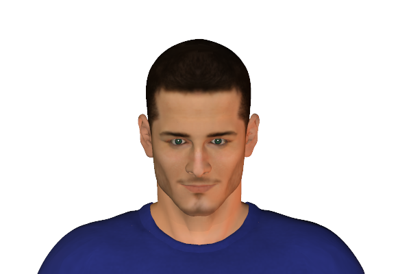
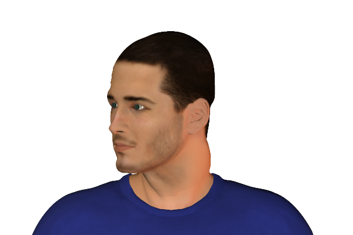
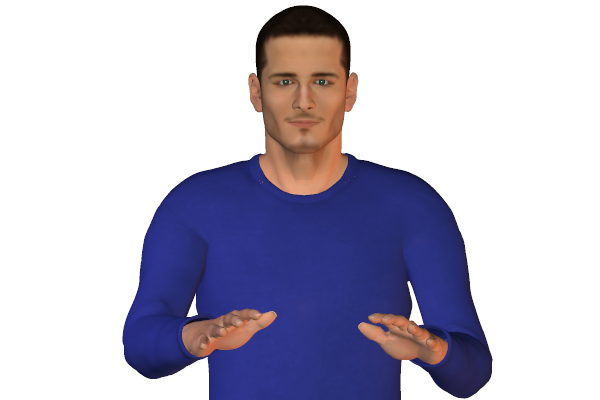
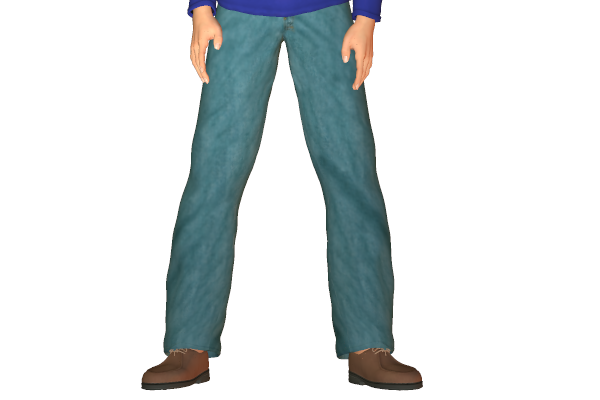

Bookmark added
-
nail biting
 frustration, suppressionIt is a habit of self comfort. It can also indicate nervousness or stress due to frustration or fear.
frustration, suppressionIt is a habit of self comfort. It can also indicate nervousness or stress due to frustration or fear. -
fast head noddinghurry up, impatienceVigorous head nodding indicates impatience. It usually indicates to the other person to wind up the conversation.
-
head shakingdisagreementShaking the head sideways indicates disapproval. But it can also signal frustration.
-
interwoven clenched fingersfrustration, negativity, anxiousnessUsually this gesture would be done with hands rested on any surface.
-
thumb(s) clenched inside fist(s)self-comforting, frustration, insecurityThis indicates insecurity. It could also signal the persons insecurity or frustration.
-
hand supporting chin or side of face
 evaluation, tiredness or boredomPeople displaying this signal are usually in a state of boredom or are assessing the situation.
evaluation, tiredness or boredomPeople displaying this signal are usually in a state of boredom or are assessing the situation. -
hand clasping wristfrustrationClasping the wrist may be behind the back or in the front. It usually signals frustration as though holding oneself back.
-
running hands through hair
 flirting, or vexation, exasperationThis sign is commonly associated with flirting. But can also be done when a person is exasperated or frustrated.
flirting, or vexation, exasperationThis sign is commonly associated with flirting. But can also be done when a person is exasperated or frustrated. -
hands in pockets
 disinterest, boredomThe signal usually indicates the person is bored if he is amongst a group of people.
disinterest, boredomThe signal usually indicates the person is bored if he is amongst a group of people. -
eye shrug
 frustrationUpward rolling of the eyes indicates frustration.
frustrationUpward rolling of the eyes indicates frustration. -
finger wagging (up and down)admonishment, emphasisA gesture which looks like someone is tapping on a surface. This is usually done when someone is thinking.
-
palms down moving up and down, fingers spreadseeking or asking for calm, loss of control of a group or situationThis kind of gesture is used when the person is trying to suppress or calm a situation down.
-
rubbing hands togetheranticipation, relishUsually a conscious gesture of postive expectation. Often in anticipation of a reward or an enjoyable activity.
-
splayed legs, standingaggression, ready for actionPeople standing with their legs wide apart, usually unconsciously indicate a defensive posture. This also makes their body look wider.
-
pursing lipsupsetAn indication that one is holding himself back from expressing what he wants to say. It can make the person anxious, impatient or upset.